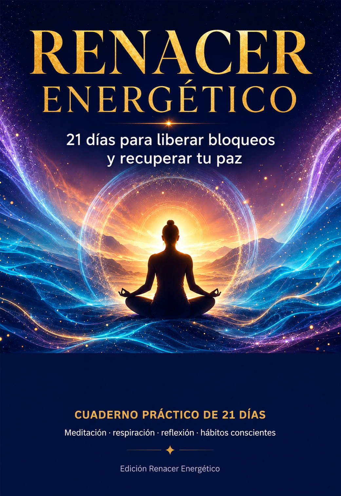

Cuaderno práctico · 49 páginas
Renacer Energético
21 días para liberar bloqueos y recuperar tu paz
Tres etapas —reconocer, liberar y renovar— con una práctica guiada y una página de cuaderno para cada día. Trabajas respiración consciente, límites amables, descanso sin culpa y hábitos pequeños que sí puedes sostener. Entre 10 y 15 minutos diarios, sin necesidad de adoptar ninguna creencia.
- Incluye 21 prácticas guiadas y 21 páginas de escritura reflexiva
- Además rutina de 10 minutos, plan de continuidad y registro de 30 días
- Formato PDF para leer en el celular o imprimir
$149 MXN
Comenzar los 21 díasRecibes el enlace por correo en cuanto se aprueba tu pago.